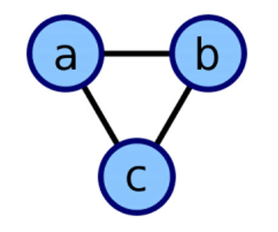
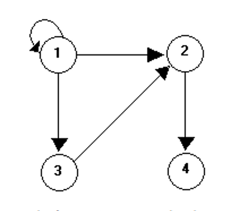
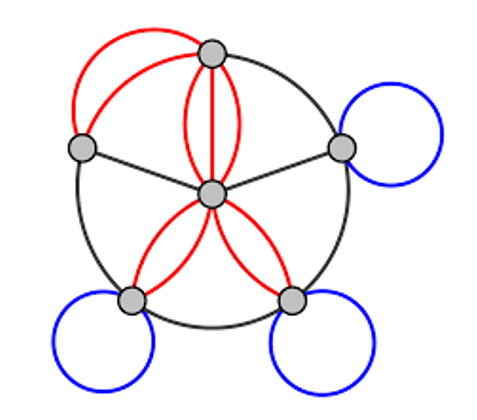
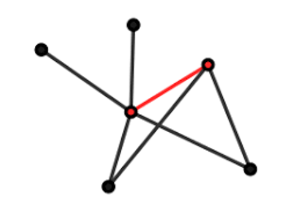
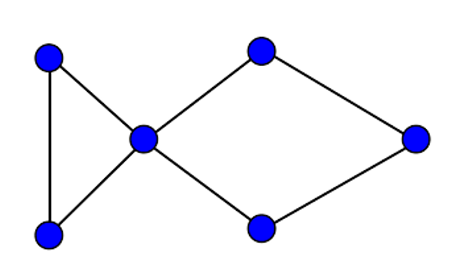
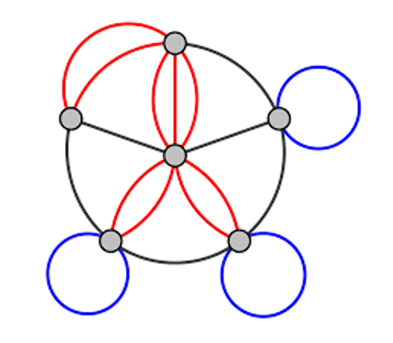
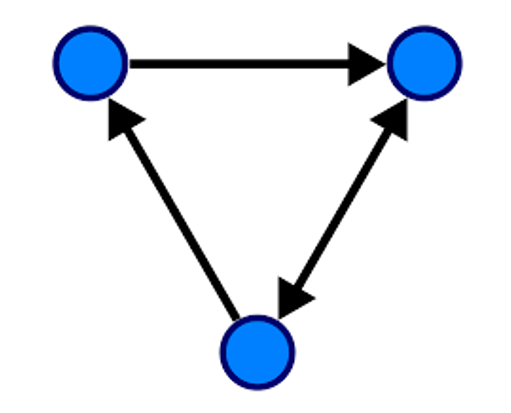
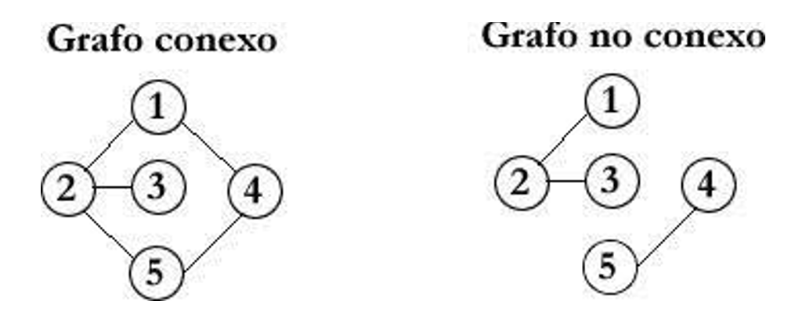
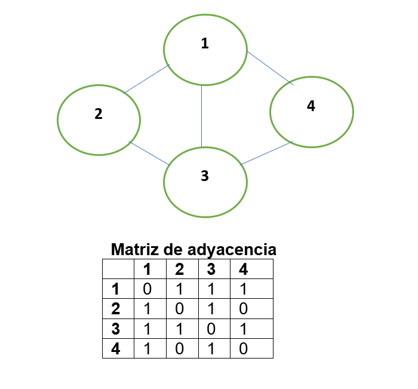
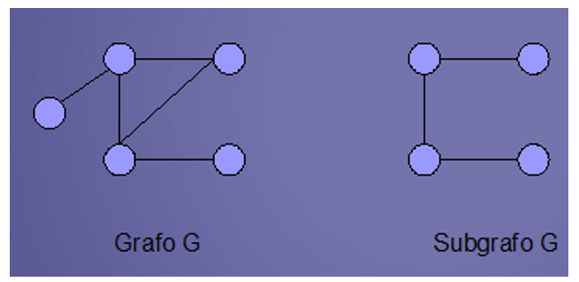

Un grafo es un conjunto de objetos llamados vértices o nodos unidos por enlaces llamados aristas o arcos, que permiten representar relaciones binarias entre elementos de un conjunto. Gracias a la teoría de grafos se pueden resolver diversos problemas como por ejemplo la síntesis de circuitos secuenciales, contadores o sistemas de apertura. Se utiliza para diferentes áreas, por ejemplo, Dibujo computacional, en todas las áreas de Ingeniería. Los grafos se utilizan también para modelar trayectos como el de una línea de autobús a través de las calles de una ciudad, en el que podemos obtener caminos óptimos para el trayecto aplicando diversos algoritmos como puede ser el algoritmo de Floyd.
Aristas Adyacentes: estas son dos aristas que se dirigen en al mismo vértice y se juntan en él.
Un grafo o dígrafo es una arista que conecta al mismo vértice consigo mismo.
Las aristas múltiples (también llamadas aristas paralelas o una multi-arista), son dos o más aristas que son incidentes (es decir, que conectan) a al menos dos vértices.
Un vértice adyacente de un vértice v en un grafo es un vértice que está conectado a v mediante una arista.
Grafo simple o simplemente grafo: Es aquel que acepta una sola una arista uniendo dos vértices cualesquiera. Esto es equivalente a decir que una arista cualquiera es la única que une dos vértices específicos.
Son grafos que aceptan más de uEna arista entre dos vértices. Estas aristas se llaman múltiples o lazos.
Son grafos en los cuales se ha añadido una orientación a las aristas, representada gráficamente por una flecha.
En teoría de grafos, un grafo conexo o conectado es un grafo en que todos sus vértices están conectados por un camino o por un semicamino.
Es una matriz booleana que representa las conexiones entre pares de vértices. La matriz de adyacencia de un grafo es simétrica. Si un vértice es aislado entonces la correspondiente fila (columna) está compuesta sólo por ceros. Si el grafo es simple entonces la matriz de adyacencia contiene solo ceros y unos (matriz binaria) y la diagonal está compuesta sólo por ceros.
Dibujar un grafo no orientado y su matriz de adyacencia según lo que expresan los siguientes conjuntos:
V = {1,2,3,4}
A = {12,13,14,23,21,31,32,34,41,43}
Un subgrafo de un grafo G es un grafo cuyos conjuntos de vértices y aristas son subconjuntos de los de G.
Los grafos isomorfos deben de contar con la misma cantidad de vértices, aristas y la sucesión de sus grados debe ser igual, si dos grafos son isomorfos sus complementarios también lo son.